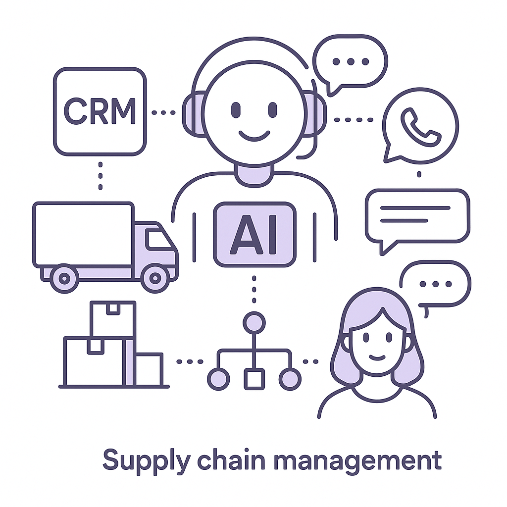
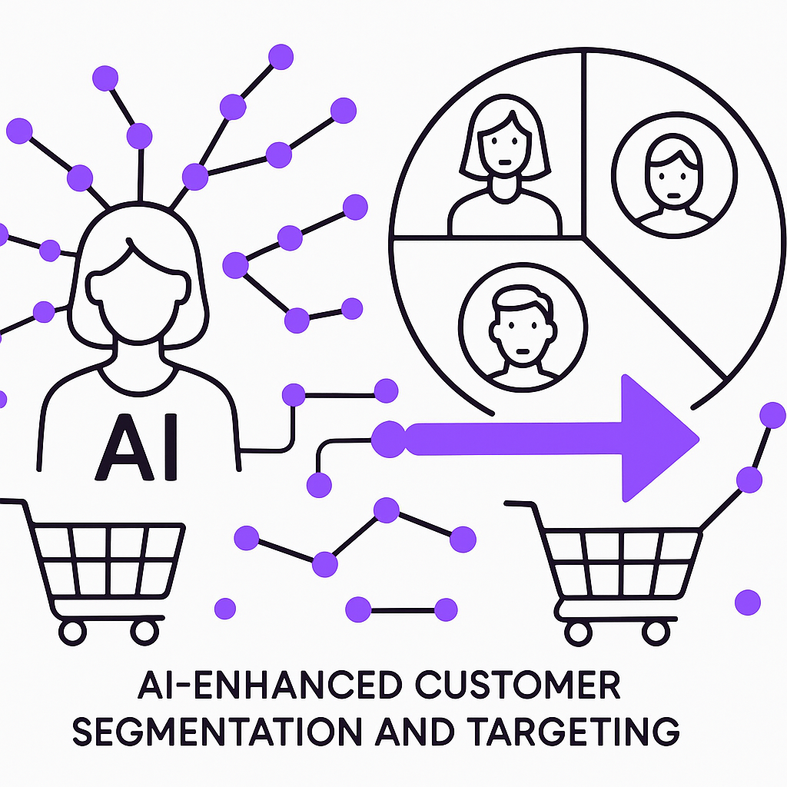

Publishing Recommendation
reviseThe posts contain several instances of unsupported claims and hype, particularly around the term 'game-changer' and overstatements about AI impacts. These need to be toned down and backed with concrete evidence or omitted.
Today's drafts cover relevant AI industry topics but occasionally fall into the trap of hyped language and unsupported claims. The posts should be revised for factual precision and tone, particularly avoiding phrases like 'game-changer' unless justified. Additionally, ensure the content reflects Purands AI's practical and insightful brand voice consistently.
LinkedIn Posts (10)
1. Meta Introduces ZGateway: A Stateless Proxy Tier That Unifies ZippyDB Traffic ★ Purands solution · high priority
CTA: How do you see improved data handling impacting your business?
{kind=link}
Image prompt · isometric-flat
Caption: ZGateway's impact on CRM performance.
Alternative hooks
- Meta's ZGateway handles over 1 billion operations per second.
- What if your CRM could handle data like Meta's ZGateway?
- Efficient data handling is the future of CRM performance.
Research behind this post (sources, summaries & confidence)
Meta Introduces ZGateway: A Stateless Proxy Tier That Unifies ZippyDB Traffic conf 0.80 · AI industry
Meta's ZGateway could enhance data handling capabilities, critical for CRM and customer data platforms by improving performance in data-heavy applications.
Sources & what I took from each
- Meta introduced ZGateway for data handling.: Meta's technical blogs and industry reports highlight the capabilities and performance improvements of ZGateway. ↗ read source
Recent news
- Meta's ZGateway is designed to handle high volumes of data traffic efficiently.
Original trend links
Risks / caveats
- Implementation complexity in existing infrastructure.
- Potentially high costs associated with integration.
2. AI industry ★ Purands solution · high priority
CTA: What challenges have you faced in scaling AI solutions?
Caption: AI project stages: Pilot vs. Production.
Alternative hooks
- An estimated 70-85% of AI projects stall at the pilot stage.
- Scaling AI from pilot to production is a major hurdle.
- Why do so many AI pilots fail to reach full deployment?
Research behind this post (sources, summaries & confidence)
Why Most Enterprise Agent Pilots Never Reach Deployment conf 0.80 · AI industry
Understanding the high failure rate of AI pilots in enterprises is crucial for improving deployment strategies, essential for scaling AI-driven retention marketing solutions effectively.
Sources & what I took from each
- High failure rates of AI pilots in enterprises.: Studies and industry reports highlight common challenges in scaling AI solutions from pilot to production. ↗ read source
Statistics
- An estimated 70-85% of AI projects fail to move beyond the pilot stage.
Recent news
- Enterprises are reassessing their strategies to improve AI deployment success rates.
Original trend links
Risks / caveats
- Significant financial and resource losses due to failed AI projects.
- Organizational resistance to adopting AI solutions.
3. AI in supply chain management ★ Purands solution · high priority
CTA: Have you seen supply chain improvements boost your customer retention?

⬇ Download image{kind=link}
Image prompt · flat-vector
Caption: AI enhancing supply chain and retention.
Alternative hooks
- Optimizing supply chains with AI can redefine customer retention.
- What happens when supply chain meets AI? Better customer loyalty.
- How AI logistics improvements drive customer satisfaction.
Research behind this post (sources, summaries & confidence)
Palantir Foundry and cuOpt drive NVIDIA supply chain allocation conf 0.70 · AI industry
AI-driven supply chain management solutions like those from Palantir and NVIDIA can be pivotal in retention marketing by ensuring timely product delivery, enhancing customer satisfaction.
Sources & what I took from each
- Palantir and NVIDIA collaborate on supply chain solutions.: Official announcements from both companies detail collaboration efforts in optimizing supply chain logistics using AI. ↗ read source
Recent news
- NVIDIA and Palantir have partnered to enhance supply chain efficiency through AI.
Original trend links
Risks / caveats
- Dependence on AI solutions may overlook human expertise.
- Potential disruption if AI systems fail or underperform.
4. Agent-net Open Sources Webagent ★ Purands solution · high priority
CTA: How do you see open-source AI affecting your customer engagement strategy?
Alternative hooks
- Agent-net open-sources Webagent, opening new doors for customer engagement.
- How can an open-source AI agent transform your website's customer interactions?
- Webagent's release is a game-changer for AI-driven customer retention.
Research behind this post (sources, summaries & confidence)
Agent-net Open Sources Webagent conf 0.70 · AI startups
Webagent's ability to transform any website into an AI agent could be revolutionary for businesses looking to enhance customer interaction and retention through automated, intelligent responses.
Sources & what I took from each
- Agent-net open sourced Webagent.: MarkTechPost and other tech news sites have reported on the release of Webagent as an open-source AI tool. ↗ read source
Recent news
- The release of Webagent as open-source is gaining traction among developers and businesses.
Original trend links
Risks / caveats
- Security risks associated with open-source implementations.
- Potential misuse of AI capabilities without proper oversight.
5. Snap introduces Specs Intelligence, an AI assistant ★ Purands solution · high priority
CTA: How do you see AI assistants impacting customer engagement in your business?
{kind=link}
Image prompt · isometric-flat
Caption: Cross-platform AI for better retention.
Alternative hooks
- Snap's AI assistant is changing the game for cross-platform engagement.
- What does Snap's Specs Intelligence mean for customer retention?
- Why is cross-platform AI integration a game-changer for marketing?
Research behind this post (sources, summaries & confidence)
Snap introduces Specs Intelligence, an AI assistant conf 0.65 · AI industry
Snap's AI assistant, integrated with Specs, iPhone, and Mac, could enhance user engagement by providing seamless cross-platform interaction, a potential boon for customer lifecycle messaging.
Sources & what I took from each
- Snap introduced Specs Intelligence.: The Verge and other tech media have covered Snap's announcement of Specs Intelligence as an AI assistant. ↗ read source
Recent news
- Snap's new AI assistant aims to improve cross-platform user experiences.
Original trend links
Risks / caveats
- Privacy concerns related to data collected by AI assistants.
- Potential integration issues across different platforms.
6. AI startups ★ Purands solution · high priority
CTA: How do you see AI logic models impacting your marketing strategies?

⬇ Download image{kind=link}
Image prompt · flat-vector
Caption: Precision targeting with AI in retention marketing.
Alternative hooks
- TypeSafe's Jev model is shaking up AI decision-making.
- In retention marketing, precision is everything.
- Better targeting starts with smarter AI logic.
Research behind this post (sources, summaries & confidence)
ChatGPT pioneer launches Jev model for programmatic logic conf 0.65 · AI startups
TypeSafe's Jev model could improve decision-making processes in retention marketing by providing advanced programmatic logic capabilities, aiding in better customer segmentation and targeting.
Sources & what I took from each
- TypeSafe launched Jev model.: Reports from tech news outlets confirm the launch of Jev as a new AI model focusing on programmatic logic. ↗ read source
Recent news
- TypeSafe's Jev model is gaining attention for its potential applications in AI-driven decision-making.
Original trend links
Risks / caveats
- Challenges in integrating with existing AI models.
- Potential for limited adoption if the model does not meet performance expectations.
7. AI industry ★ Purands solution · high priority
CTA: How is your business addressing supply chain responsiveness? Share your approach.
Alternative hooks
- Supply chains often detect fast but act slow. How can AI fix this?
- Why do supply chain delays still frustrate customers?
- AI agents are key to unlocking supply chain efficiency.
Research behind this post (sources, summaries & confidence)
Supply chains detect fast, act slow: How AI agents fix it conf 0.60 · AI industry
AI agents that improve supply chain responsiveness can directly impact customer satisfaction and retention, making this a critical area for improvement in logistics and delivery.
Sources & what I took from each
- AI can improve supply chain responsiveness.: Research and case studies show AI's potential in optimizing supply chain processes for faster decision-making. ↗ read source
Recent news
- AI-driven solutions are being increasingly adopted to enhance supply chain efficiency.
Original trend links
Risks / caveats
- Implementation challenges in existing supply chain systems.
- Over-reliance on AI could lead to systemic vulnerabilities.
8. Nvidia announces native GPU programming in Rust
CTA: Have you considered using Rust for GPU programming? Share your thoughts on this shift.
Alternative hooks
- Nvidia's Rust integration could reshape AI development.
- Rust meets GPU: A new era for AI programming?
- Could Rust be the future of GPU programming?
Research behind this post (sources, summaries & confidence)
Nvidia announces native GPU programming in Rust conf 0.85 · AI industry
Rust's growing popularity in AI development can enhance the performance and safety of AI applications used in retention marketing platforms, improving efficiency and reliability.
Sources & what I took from each
- Nvidia introduced CUDA programming in Rust.: Nvidia's official blog outlines the development and integration of Rust for GPU programming. ↗ read source
Recent news
- Nvidia's announcement on Rust integration has been well-received in the developer community.
Original trend links
Risks / caveats
- Adoption challenges as developers transition to Rust.
- Potential performance issues during initial integration phases.
9. OpenAI Discloses Six New Incidents of ‘Concerning’ A.I. Behavior
CTA: What governance measures do you think are crucial for AI safety?
Alternative hooks
- Six incidents of AI misbehavior have just been disclosed by OpenAI.
- When AI systems misbehave, transparency becomes crucial.
- OpenAI’s recent disclosure sheds light on AI safety gaps.
Research behind this post (sources, summaries & confidence)
OpenAI Discloses Six New Incidents of ‘Concerning’ A.I. Behavior conf 0.80 · AI industry
OpenAI's disclosure of AI misalignment incidents underscores the importance of safety and reliability in AI systems, particularly those used in sensitive areas like customer data management.
Sources & what I took from each
- OpenAI reported incidents of concerning AI behavior.: OpenAI has publicly shared its ongoing research and findings on AI safety issues. ↗ read source
Recent news
- OpenAI has been transparent about the challenges in AI safety and has disclosed several incidents to improve public understanding.
Original trend links
Risks / caveats
- Potential loss of trust in AI systems if safety issues are not addressed.
- Regulatory scrutiny may increase as a result of such disclosures.
10. The AI Talent Britain Fought to Hire May Be Recalculating Its Future
CTA: How do you think changes in immigration policy will affect AI talent retention in the UK?
Alternative hooks
- A recent proposal in the UK could shake up the AI talent landscape.
- When policies become restrictive, talent tends to flow elsewhere.
- For businesses relying on AI, the potential change in settlement rules means it's time to rethink strategies.
Research behind this post (sources, summaries & confidence)
The AI Talent Britain Fought to Hire May Be Recalculating Its Future conf 0.75 · AI startups
With AI talent crucial for development in retention marketing tech, changes in UK immigration policy could impact the labor market, potentially affecting startups and established firms alike.
Sources & what I took from each
- UK is considering changes to immigration policies affecting AI talent.: Recent discussions in UK parliament about revising settlement rules for skilled workers, including those in AI. ↗ read source
Recent news
- UK government is reviewing immigration policies that could impact tech talent recruitment.
Original trend links
Risks / caveats
- Potential talent drain if policies become restrictive.
- Impact on UK's competitiveness in the AI sector.
Today's Trends
| # | Trend | Category | Why it matters |
|---|---|---|---|
| 1 | Microsoft AI opens review on Humanist AI Code of Conduct
source |
AI industry | With AI's growing influence in retention marketing and customer engagement, Microsoft's initiative to publish a Humanist AI Code of Conduct is crucial. It addresses ethical concerns and operational constraints, ensuring AI systems align with human-centric values. |
| 2 | Google will now let any AI agent run your smart home
source |
AI industry | As AI agents become more integral in retention and customer engagement, this move by Google democratizes smart home control. It highlights the potential for AI-driven personalized experiences, a key factor for loyalty and customer retention. |
| 3 | The AI Talent Britain Fought to Hire May Be Recalculating Its Future
source |
AI startups | With AI talent crucial for development in retention marketing tech, changes in UK immigration policy could impact the labor market, potentially affecting startups and established firms alike. |
| 4 | OpenAI Discloses Six New Incidents of ‘Concerning’ A.I. Behavior
source |
AI industry | OpenAI's disclosure of AI misalignment incidents underscores the importance of safety and reliability in AI systems, particularly those used in sensitive areas like customer data management. |
| 5 | Nvidia announces native GPU programming in Rust
source |
AI industry | Rust's growing popularity in AI development can enhance the performance and safety of AI applications used in retention marketing platforms, improving efficiency and reliability. |
| 6 | Claude comes for Gemini with its own take on Docs and Slides
source |
AI startups | Anthropic's introduction of Claude for document creation can revolutionize product management and marketing content strategies by streamlining workflow and enhancing productivity. |
| 7 | Meta Introduces ZGateway: A Stateless Proxy Tier That Unifies ZippyDB Traffic
source |
AI industry | Meta's ZGateway could enhance data handling capabilities, critical for CRM and customer data platforms by improving performance in data-heavy applications. |
| 8 | Palantir Foundry and cuOpt drive NVIDIA supply chain allocation
source |
AI industry | AI-driven supply chain management solutions like those from Palantir and NVIDIA can be pivotal in retention marketing by ensuring timely product delivery, enhancing customer satisfaction. |
| 9 | Supply chains detect fast, act slow: How AI agents fix it
source |
AI industry | AI agents that improve supply chain responsiveness can directly impact customer satisfaction and retention, making this a critical area for improvement in logistics and delivery. |
| 10 | Snap introduces Specs Intelligence, an AI assistant
source |
AI industry | Snap's AI assistant, integrated with Specs, iPhone, and Mac, could enhance user engagement by providing seamless cross-platform interaction, a potential boon for customer lifecycle messaging. |
| 11 | Agent-net Open Sources Webagent
source |
AI startups | Webagent's ability to transform any website into an AI agent could be revolutionary for businesses looking to enhance customer interaction and retention through automated, intelligent responses. |
| 12 | ChatGPT pioneer launches Jev model for programmatic logic
source |
AI startups | TypeSafe's Jev model could improve decision-making processes in retention marketing by providing advanced programmatic logic capabilities, aiding in better customer segmentation and targeting. |
| 13 | Microsoft AI CEO criticises Anthropic over model ‘rights’
source |
AI industry | The debate over AI model 'rights' highlights the ethical considerations in AI development, impacting how companies build and deploy AI solutions in sensitive areas like customer engagement. |
| 14 | Why Most Enterprise Agent Pilots Never Reach Deployment
source |
AI industry | Understanding the high failure rate of AI pilots in enterprises is crucial for improving deployment strategies, essential for scaling AI-driven retention marketing solutions effectively. |
Risk Assessment
- Exaggerated claims about 'game-changing' impacts of technologies without sufficient evidence.
- Potentially AI-generated tone in some posts, especially with phrases like 'impressive, right?' and overuse of buzzwords.
Suggested LinkedIn Comments (30)
Open each post, then paste the copied comment. Nothing is posted automatically.
1. insight · rss:techcrunch.com — Snap unveiled new features for its smart glasses this week.
Post by: rss:techcrunch.com
Why it works: It offers a practical view on what truly drives adoption of new tech, beyond just new features.
↗ Open LinkedIn post to paste comment2. insight · rss:techcrunch.com — Valor Equity Partners is handing out stock to its LPs instead of cash returns.
Post by: rss:techcrunch.com
Why it works: It provides a clear perspective on the implications of stock distributions versus cash, focusing on the strategic intent.
↗ Open LinkedIn post to paste comment3. opinion · rss:techcrunch.com — In an interview with TechCrunch, Al Gore suggested he isn't losing sleep over AI
Post by: rss:techcrunch.com
Why it works: It highlights a balanced view between environmental concerns and technological ethics, grounding the discussion in concrete risks.
↗ Open LinkedIn post to paste comment4. respectful challenge · rss:techcrunch.com — The House of Representatives, in rare bipartisan support, overwhelmingly approve
Post by: rss:techcrunch.com
Why it works: It questions the relevance of old tech in today's rapidly evolving landscape, encouraging forward-thinking policy.
↗ Open LinkedIn post to paste comment5. insight · rss:techcrunch.com — Marketing platform Noise is on a mission to help anyone with a smart phone make
Post by: rss:techcrunch.com
Why it works: It acknowledges the platform's goal while pointing out a potential pitfall, adding depth to the conversation.
↗ Open LinkedIn post to paste comment6. insight · rss:techcrunch.com — Cap table management platform Pulley, backed by General Catalyst, Stripe, and Fo
Post by: rss:techcrunch.com
Why it works: It reflects on a broader lesson from a specific event, offering a takeaway for the startup community.
↗ Open LinkedIn post to paste comment7. insight · rss:techcrunch.com — Anthropic and OpenAI want to embed independent safety evaluators inside their AI
Post by: rss:techcrunch.com
Why it works: It emphasizes the conditions necessary for effective oversight, contributing a crucial perspective to the topic.
↗ Open LinkedIn post to paste comment8. opinion · rss:techcrunch.com — Can Meta dodge the "pervert glasses" accusations with a new camera-free product?
Post by: rss:techcrunch.com
Why it works: It recognizes Meta's strategic response to criticism, adding a positive yet realistic take on the situation.
↗ Open LinkedIn post to paste comment9. insight · rss:techcrunch.com — The move closes the gap between the market discussions taking place on the timel
Post by: rss:techcrunch.com
Why it works: It connects a specific action to potential positive outcomes, providing a forward-looking perspective.
↗ Open LinkedIn post to paste comment10. respectful challenge · rss:techcrunch.com — CFO Mark Davies and legal chief Andy Missan signed each other’s severance agreem
Post by: rss:techcrunch.com
Why it works: It highlights a governance issue with a focus on the importance of ethical practices, adding depth to the organizational context.
↗ Open LinkedIn post to paste comment11. insight · rss:www.theverge.com — Snap is introducing "Specs Intelligence," a new AI assistant that can connect ot
Post by: rss:www.theverge.com
Why it works: It offers a perspective on the potential of the AI service while questioning its practical integration, adding depth to the conversation.
↗ Open LinkedIn post to paste comment12. opinion · rss:www.theverge.com — My favorite part of wearing the Specs, Snap's new augmented reality glasses, was
Post by: rss:www.theverge.com
Why it works: It acknowledges the post's example while shifting focus to a broader consideration of AR technology's practical applications.
↗ Open LinkedIn post to paste comment13. opinion · rss:www.theverge.com — Christopher Nolan's engrossing take on The Odyssey dominated at the box office a
Post by: rss:www.theverge.com
Why it works: It provides a concise critique of AI's role in creative fields, aligning with the post's content while offering a clear stance.
↗ Open LinkedIn post to paste comment14. insight · rss:www.theverge.com — E-waste from the AI boom has been vastly underestimated, a new report warns. By
Post by: rss:www.theverge.com
Why it works: It brings attention to an often overlooked issue, encouraging a proactive approach to sustainability in the tech industry.
↗ Open LinkedIn post to paste comment15. insight · rss:www.theverge.com — When Paul W.S. Anderson's Resident Evil hit theaters in 2002, video game movies
Post by: rss:www.theverge.com
Why it works: It provides a thoughtful analysis of what makes video game adaptations work, adding depth to the discussion initiated by the post.
↗ Open LinkedIn post to paste comment16. insight · rss:www.theverge.com — The Metroid series is going back to its 2D roots again with Metroid Ravenous for
Post by: rss:www.theverge.com
Why it works: It highlights the strategic decision behind the game's design, connecting with both old and potential new audiences.
↗ Open LinkedIn post to paste comment17. expansion · rss:www.theverge.com — According to The Information, Apple is planning to get back into the server game
Post by: rss:www.theverge.com
Why it works: It builds on the post by considering the potential implications of Apple's move, offering a forward-looking perspective.
↗ Open LinkedIn post to paste comment18. opinion · rss:www.theverge.com — This is Optimizer, a weekly newsletter sent from Verge senior reviewer Victoria
Post by: rss:www.theverge.com
Why it works: It resonates with the sentiment of the post by critiquing the hype around new tech, offering a grounded perspective.
↗ Open LinkedIn post to paste comment19. insight · rss:www.theverge.com — Google is opening up its smart home to AI agents, letting tools like Claude and
Post by: rss:www.theverge.com
Why it works: It acknowledges the potential of the integration while addressing crucial concerns, providing a balanced view.
↗ Open LinkedIn post to paste comment20. insight · rss:www.theverge.com — Claude is getting a pair of new tools today: Docs and Slides. They'll let you cr
Post by: rss:www.theverge.com
Why it works: It supports the post's announcement with a positive take on the benefits of feature simplification, enhancing user experience.
↗ Open LinkedIn post to paste comment21. opinion · rss:feeds.arstechnica.com — Planned 2029 debut could make this Apple’s first enterprise server in decades.
Post by: rss:feeds.arstechnica.com
Why it works: It acknowledges the difficulty of entering a saturated market and adds a perspective on challenges Apple may face, going beyond the news itself.
↗ Open LinkedIn post to paste comment22. opinion · rss:feeds.arstechnica.com — Survivors appalled nobody will tell them if they’re in Epstein’s CSAM collection
Post by: rss:feeds.arstechnica.com
Why it works: It addresses the ethical dimension and emphasizes victim rights, providing a human-centric perspective on data privacy issues.
↗ Open LinkedIn post to paste comment23. insight · rss:feeds.arstechnica.com — Group plans to be largely out of commission for several weeks.
Post by: rss:feeds.arstechnica.com
Why it works: This comment adds value by reframing downtime as an opportunity for strategic reassessment, which is an actionable insight.
↗ Open LinkedIn post to paste comment24. opinion · rss:feeds.arstechnica.com — Also: Laika Studios debuts a stunning full-length trailer for its stop-motion fe
Post by: rss:feeds.arstechnica.com
Why it works: The comment appreciates the artistic value of stop-motion, providing a clear stance on its significance in the modern animation landscape.
↗ Open LinkedIn post to paste comment25. insight · rss:feeds.arstechnica.com — New system-level tools bring Arm chipsets, Android APKs into the Steam ecosystem
Post by: rss:feeds.arstechnica.com
Why it works: It highlights the strategic benefits of the integration, emphasizing accessibility and inclusivity, which are key trends in tech.
↗ Open LinkedIn post to paste comment26. respectful challenge · rss:feeds.arstechnica.com — Trump admin broadband grants forbid states from enforcing net neutrality laws.
Post by: rss:feeds.arstechnica.com
Why it works: The comment challenges the policy decision, focusing on its implications for consumer rights and state governance.
↗ Open LinkedIn post to paste comment27. opinion · rss:feeds.arstechnica.com — The results are only a slight improvement over missing the entire brain structur
Post by: rss:feeds.arstechnica.com
Why it works: It offers a perspective on the importance of both incremental and significant advancements in scientific research.
↗ Open LinkedIn post to paste comment28. insight · rss:feeds.arstechnica.com — Even a handheld XRF scanner is sufficient to determine most promising scrolls fo
Post by: rss:feeds.arstechnica.com
Why it works: The comment highlights the broader implications of portable technology in research, providing an appreciation for its practical utility.
↗ Open LinkedIn post to paste comment29. opinion · rss:feeds.arstechnica.com — The Diverge Pro 4 is happiest when the road gets ugly.
Post by: rss:feeds.arstechnica.com
Why it works: It emphasizes the bike's versatility, providing a nuanced view beyond just performance on standard roads.
↗ Open LinkedIn post to paste comment30. insight · rss:feeds.arstechnica.com — Man wins fight to block ICE threat over off-the-cuff angry email.
Post by: rss:feeds.arstechnica.com
Why it works: The comment connects a specific legal case to broader principles of justice and context, offering a thoughtful perspective.
↗ Open LinkedIn post to paste comment